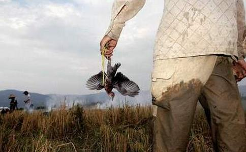

猎鸟

黑夜猎鸟
鸟之殇，千年鸟道上的大屠杀一个名为《鸟之殇，千年鸟道上的大屠杀》12分钟的纪录片拍摄于湖南省罗霄山脉的大山深处，志愿者李锋和他的两名同伴先后8次，前后历时一个月，在大山里坚守，直击了候鸟迁徙道路上的杀戮。
10月19日，新京报记者对话了该纪录片的拍摄者李锋。
新京报：为什么会想到拍这个纪录片？
李锋：因为身边很多环保志愿者告诉我，湖南很多地方对候鸟杀戮很严重。此前没有人近距离接触和拍到杀戮场面，我觉得只有将这个场面拍到，赤裸裸地展现在公众面前，才会触动人心。
我希望把这一现场记录下来，让更多的人关注它们（候鸟）的
新京报：为什么选在桂东县的罗霄山脉拍摄？
李锋：因为这里打鸟的很专业，全部是持枪。我们是冲着最危险、最恶劣的杀戮现场去的。
新京报：你们偷拍黑枪打鸟会不会很危险？
李锋：有很惊险的经历。第一次拍摄，枪一响我就举起单反相机，这时对面山头上照射候鸟用的LED灯扫了过来，就像枪战片中哨兵台上的灯光一样。
同伴是退役侦察兵，他喊了一声“照到我们了”，转身就跳下了悬崖，我也拿着相机跟着跳了下去。好在这个悬崖只有一百多米深，而且上面长满了茅草，翻滚中，我们抓住了茅草而没有滑落谷底。后来才发现手都被划伤了。
新京报：你们看到的打鸟的场面是怎样的？
李锋：第一次拍摄是9月21日，我们准备了军用迷彩衣服盖在身上，躲在灌木丛中。晚上8点多，对面山上LED灯就亮起来，照亮整个山谷。我拍过很多明星演唱会，但却没有见过一个演唱有如此壮观的灯光。
新京报：你估计有多少打鸟的人？
李锋：一座山头，有几百盏LED灯，后面隐藏着上百杆枪。鸟群飞过时，在LED强光下就成了一个个白色亮点。接着此起彼伏的枪声响起，很多鸟都掉了下来。枪声之后就有人喊“打到了、打到了”。然后就是笑声。
他们是有专业分工的，有人专门打灯，有人专门打枪，还有人拿着手电筒去找击落的鸟。这些鸟飞得过这个山头，也飞不过那个山头，不在这个山谷打下来，就会在那个山谷打下来。
新京报：打鸟的都是什么人？
李锋：有三类人，一种是土著村民，他们上山打鸟只是为了改善伙食，他们一般拿着手电筒，设备很差。
第二种是职业团伙，他们会霸占一个山头，设备非常专业，打的鸟全部用来卖的，甚至形成一条龙产业链；其中有一部分甚至从北到南跟着迁徙的候鸟一路捕杀。
还有一种是拿着猎枪过来寻乐子的，我们拍摄时经常见到挂着广东、江西等地牌照的豪车，他们带着美女和啤酒，提起鸟枪，撑个雨伞来体验打猎的“贵族”
新京报：你们观察到的打下来的鸟有多少？
李锋：有个村民告诉我们，10月3日那天打下来的很多，足有一吨。你想想，一个山头有两三百盏灯，一盏灯代表一伙打鸟人，这个数量是难以估计的。
新京报：打下来的鸟一般都流向哪里？
李锋：当地有个习俗，小孩断奶之后第一顿饭“开斋”就是吃鸟肉，喝鸟汤。县城里几乎每家餐馆都有鸟类出售。
桂东县市场里，也有人提着网袋装着的鸟兜售，多的10多只，少的两三只。卖完后再回家拿。我们在市场附近的一个窝点看到大约一百多只鸟。除了在当地卖，还有很多鸟会被卖到外地。
新京报：这些鸟能卖多少钱？
李锋：价格不一样，有些鸟每只只卖5元，受国家保护的鸟类价格就很高，一个饭馆对天鹅的要价是300元。
当地农民收入很低，月均收入1000元左右。候鸟过境的两三个月，有村民说能挣个万把块钱。
新京报：除了桂东县，还有哪些地方有打鸟的情况？
李锋：湖南邵阳、娄底、益阳、郴州地区都有。
新京报：你们就屠杀候鸟的事情报警了吗？
李锋：我们找了桂东县的林业公安局，但林业公安只管山上的事，市场上的事情归工商。后来公安、工商联合城管，出动三批人来检查市场。但这些人还没到市场，那些卖鸟人就纷纷躲起来，最后在市场只找到3只鸟。
之前没举报时，城管的工作人员与卖鸟的人擦肩而过，也没人管。
新京报：你认为政府监管难处在哪？
李锋：候鸟迁徙经过的地方多是深山老林、地广人稀，很多都位于几个县交界的“三不管”地带，而且鸟群经过时都在深夜。林业公安上山要花费巨大的人力物力，打鸟人一见动静立马逃走，山区那么大，根本找不到人，更不用说抓到证据刑拘了。
另外，去执法的工作人员也面临生命危险，打鸟人都带着枪，要是遇上枪击，很可能连打暗枪的人都找不到。
早在两千五百年前，
不杀生戒首先是不杀人。
犯了杀人罪，戒律中称为“波罗夷罪”，对
不杀生戒然后是不杀动物。
后来佛陀进一步要求在家、出家二众，不仅不能杀人，也不能杀害无辜的动物。在很多的经典中，我们经常可以看到描述不杀生的定义：两手占满鲜血，非常残忍地、毫无慈悲之心地伤害或杀死无辜的生命。这儿通常指杀害动物。对出家人而言，若杀害任何动物，其处罚的方法比杀人罪稍轻，虽然不是把他逐出僧团，但处罚也很重，他将被剥夺比丘应有的权利，不但不得为他人依止，更不得收徒弟，也没有资格举他人的过非（过失）。
对在家人来说，佛陀在八正道中，明确指出，佛教徒不可以经营屠宰业。这就明确告诉我们，杀害动物，不管是谁，以何种理由，都犯了第一戒。
不杀生戒还要求我们做到不叫他杀或见杀随喜。
不少人以为守不杀生戒，是我们人类对动物或植物界的一种慈善举动，也有人因羡慕持戒的功德而持戒，这虽然是好事，但不是守此戒之本义。
佛陀制此戒的根本精神是“慈悲护生”，救济将被残杀或痛苦的众生，使之得到解脱。
生命对每一个众生都是宝贵的，都具有强力的求生怕死的愿望，爱惜自己的生命。对于我们人类来说，每一个人都有求生存的权力，并且当我们活著的时候应有安全感。这是人权最基本的要求。在任何一种社会中，如果我们的生命安全得到保障，我们就会活得幸福，就能安心工作，社会才能向前发展，变得繁荣富强。反之，如果我们的生命安全得不到保障，我们整天觉得自己不安全，随时随地都有生命危险，朝不保夕，生活在这样极度恐惧与动荡不安的社会环境中，我们想到的第一个问题是我如何才能活著，我们的主要精力自然都放到求生存方面去了，那有时间考虑好好工作，又怎能安心工作？这样的社会怎能发展？所以在世界上，第一宝贵的是生命安全，人们爱惜自己的生命重过世界上任何一件东西，甚至是自己的妻儿。所以佛陀把“不杀生”放在第一位。
不杀生戒是人类对生灵的一种开恩吗？
不杀生，人们通常认为这是好心肠之人所为，是佛教徒的事，如果能持此戒，是我们人类对生灵的一种‘开恩’。其实不然。我们之所以要持不杀生戒，并不完全出于对众生之‘开恩’，也是出于对我们自身的一种保护。换句话说，保护动物和植物，就是保护我们人类自己。这在佛教缘起法的理论中解释得很清楚。
缘起法是佛教教义的中心，所有
人类是大自然的一个组成部分，我们来自于大自然，而又回到大自然。当我们来到这个世界以后，便成为大自然不可分割的一个组成部分；当我们生存在大自然中时，又必须依靠大自然。换句话说，我们人类与植物界、动物界都有密切的联系。目前大量森林遭到砍伐，无数动物遭受捕杀，大自然的生态平衡遭到破坏，这反过来也给我们人类本身的生存带来极大的危机。
我本人贪生怕死，其他众生也和我一样。
生命对任何众生来说都是宝贵的，既然我本人贪生怕死，其他众生也和我一样，所以不忍杀害其宝贵的生命以满足我一己之私欲！不仅如此，当我们见到因杀生所带来的痛苦时，悲心自然而生起。有了这种悲拔众生苦之心，爱惜生命、保护生命之心就会产生，这才是彻底的守不杀生戒。
生于五浊恶世的众生，本来就很不幸，然而由于人类的自私与无知，为了私利或享受，残杀生命的现象到处存在，更增加了众生的痛苦。
应以什么样的心态对待一些杀戮事件和不公正事件？
如果我们以憎恨心对待不公正，我们就有可能做出有害而无利的事来，也许我们会后悔一辈子。如果我们看到因杀生而产生的种种痛苦，以般若智慧观照这些苦难，悲心由此而生。心是唯一有用而安全力量，它将成为我们护生、救苦拔苦之动力。所以第一戒又名慈悲戒，它是我们产生拔苦与乐的动力。对众生有大悲之心是第一戒真正之核心。